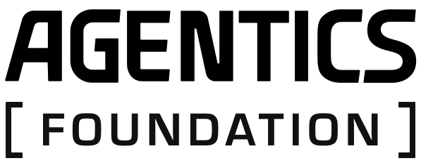
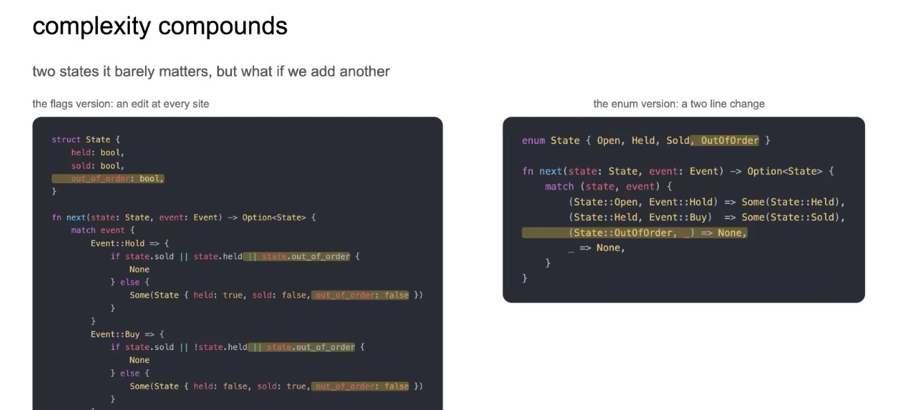
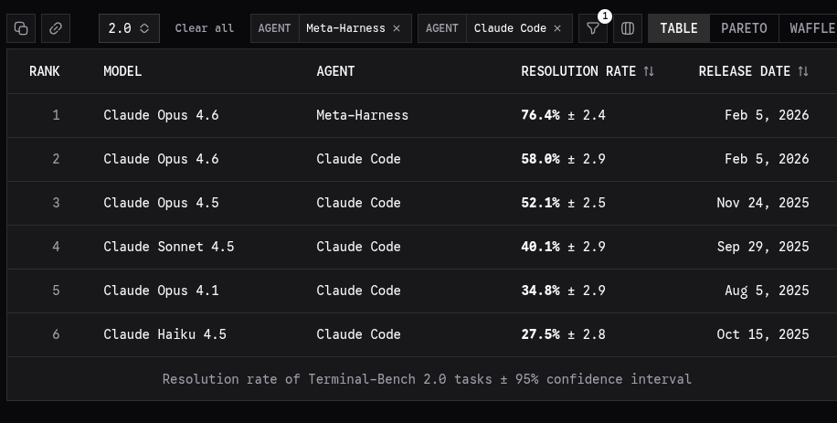
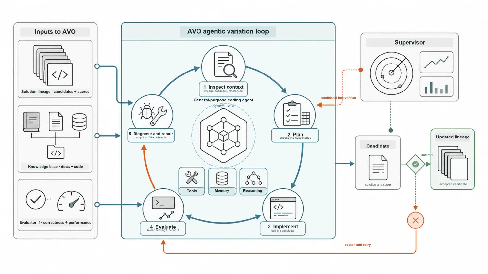

Share the task clearly
I have something in mind. What is the best way to give the agent that information so we are speaking the same language?

Software Hacktory
Harness engineering from first principles.
The first question
The software around the model that lets it act, not only answer.
Agent = Model + Harness
It controls what the model sees, what it can do, how work is judged, and what happens next.
Honest question
How many of us thought it would work that way?
How many times did the spec never get coded properly — more like 50–60% done, and you finished the rest yourself?
What happens next

Why it gets worse

Why it matters
I have something in mind. What is the best way to give the agent that information so we are speaking the same language?
How do I get the agent to do what I have in mind — consistently, every single time?
Not just code that runs — great, clean code you would merge without dread.
Do not let bad code in. It compounds over time — and becomes the most expensive code you will ever carry.
Why this comes first

Meta-Harness searches over harness code. The model stays frozen.
Same lesson · NVIDIA AVO

Model baseline around 30%. Full AVO agent system: 100.00 RHAE on the public set.
Lineage · Reuven Cohen · rUv
An early stack for running agents as real systems — not a one-shot chat.
Structure and search around the model. The surrounding loop moves the score.
A breakdown you can adapt — then customize with papers and your own constraints.
H0 · Bare
The primitive
read code → form hypothesis → edit → run tests → inspect failure → fix
The design lens
Not merely
An impressive demo is evidence of possibility, not of a system.
But
At acceptable cost, with evidence, and little friction.
Definition
Context engineering
Tests 4 and 7 fail.
This repo uses pytest-asyncio.
OAuth refresh-token rules.
The steps for a database migration.
Long-horizon work
long-horizon performance
= model capability
+ context · state · verification · recovery · memory · orchestration
Long-horizon intelligence is partly a model problem. Dependability is not.
Evaluation
02 · Laboratory
DeepSeek Harness is the substrate. The principles travel.
DeepSeek Harness
The engineering rule
Resume, fork, replay, and refinement share one event stream.
Cordis · one slide
Removing a plugin unwinds its schemas, listeners, and registrations.
A tool activates only while the services it requires are present.
Add, remove, and replace capabilities without a secret boot order.
The paper is the foundation. The workshop needs the intuition.
03 · Wow 1
The model did not become smarter. We changed what surrounded it.
H0 → H1
Bare prompt
It can describe the feature. It cannot execute or prove it.
Tool-enabled loop
Repository, editor, terminal, and tests close the loop.
H1 → H2
inspect → modify → execute → observe → verify → repeat. Tools, tests, and an explicit stop.
Planner, specialists, integrator, verifier. The right context for this job — not the whole history.
Session isolates context. Branch isolates changes. Sandbox isolates execution. All required.
05 · Recovery
Do not hope the model fails. Prepare a deterministic miss.
$ pytest tests/test_invitations.py FAIL test_duplicate_invitation expected: 409 received: 201 failure → inspect → diagnose change → rerun → pass
H3 · RecoveryLoop
Evidence
state0 → action1 → observation1 → state1 → … → outcome
06 · Wow 3
Same model. No fine-tune. The system is better prepared.
H4 · RefineLoop
Case study · two minutes
A persistent Python kernel holds state the model can operate on.
Focused agents with independent contexts. Not a shared checkout.
Prompts, memories, and skills update only after review.
07 · The factory
Not an eval chart. A ticket that closed.
ENG-42 — Add team invitations admins can invite users tokens expire after 48 hours duplicate invitations rejected API and UI feedback automated tests required Finish on: 8/8 passing · PR open · trace attached
Simple Code
What the component bought us
The principle
Complexity is earned by a measurable gain — not by a prettier diagram.
Takeaway
The harness is how the model becomes part of a dependable system.
Build the loop Measure the outcome Learn the trajectory Improve the system
Run of show
First things first
A meta harness is a harness that calls another harness to accomplish a task.
One layer orchestrates. The inner layer executes. The task gets done through harnesses all the way down.
RL in the harness
primeintellect.ai/blog/rlm · arxiv.org/abs/2512.24601
The prompt is in context. The PDF, repo, or log is only a Python variable.
Search, slice, filter. Print is capped — so it must choose what to see.
It writes code and dispatches children. It never swallows the haystack.
Fresh copies get the tools. They return summaries, not raw pages.
Edit content across turns. The run ends only when ready is true.
Root orchestrates. Children execute. The task completes down the stack.
Score the outcome. The policy learns when to peek, spawn, and stop.
The factory · three nouns
Takes the big task. Orchestrates. Marks work done only when the chain finishes.
Act, observe, verify. The software around one model that lets it work, not only answer.
Explore, then build, then QA — the same three steps, every ticket, every time.
The measure
The tools around the task
Keep the window lean. Context is scarce. Spend it on the decision, not the haystack.
Instead of hundreds of greps, reads, and terminal searches — index first, then decide.
The right model for this step. The parent does not have to be the one that writes every line.
Skill · Grill me
Ask until we speak the same language. Then — and only then — we cut the work into tickets.
Harness chain · Ziya Code